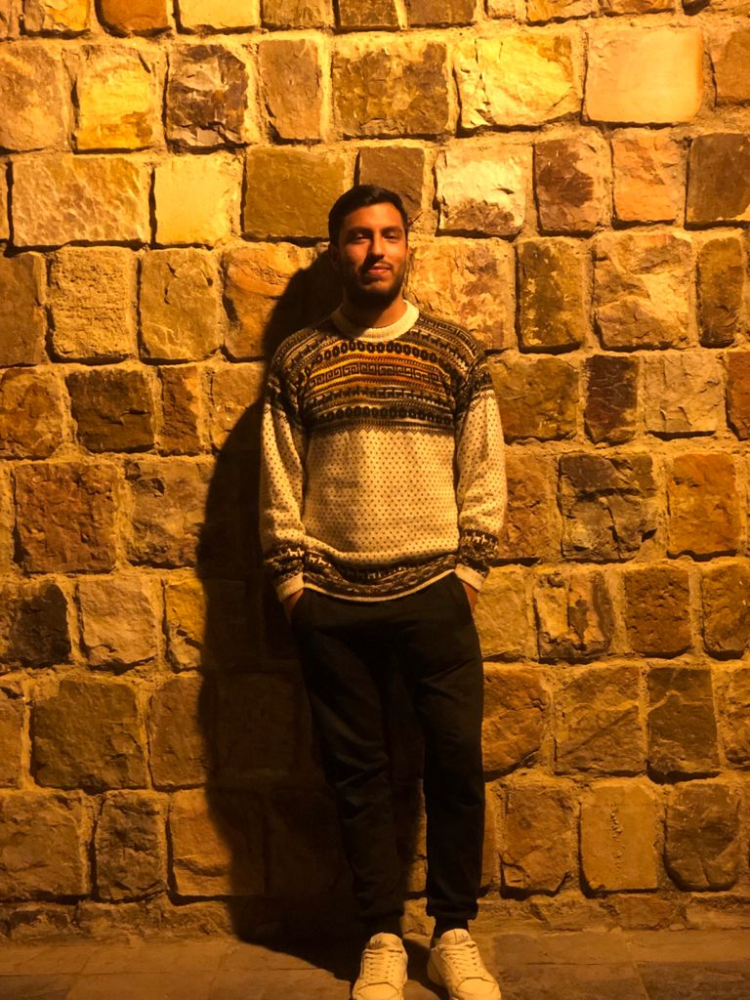

|  |
Hola, soy Victor Rios Chavez, bienvenido a mi blog personal!Actualmente soy estudiante de la carrera de Ingeniería de Sistemas en la Universidad Nacional de Cajamarca. Soy de la provincia de Celendín y en mis ratos libres me gusta ver series, jugar videojuegos y como puedes observar a la izquierda, también me gusta pasar tiempo con Morty, mi perrito. Actualmente soy estudiante de la carrera de Ingeniería de Sistemas en la Universidad Nacional de Cajamarca |